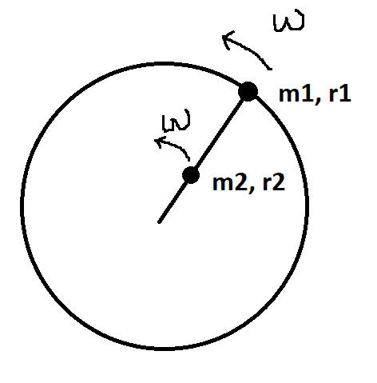
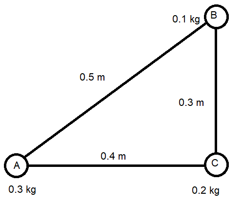

Hitausmomentti
Contents
Hitausmomentti#
Jäykällä kappaleella tarkoitetaan kappaletta, joka ei muuta muotoaan. Tällaisia kappaleita voivat olla erilaiset tangot, palkit, nosturin puomit, tarpeeksi paksut puut jne. Tarkasteltava liike keskittyy nyt pyörimiseen, ei etenemiseen. Pyörimistä on esimerkiksi se, kun puu kaatuu katkeamatta. Silloin se pyörähtää neljänneskierroksen verran sen pisteen ympäri, josta se oli kiinni maassa. Maapallokin on yksi esimerkki kappaleesta, jota voitaan tarkastella pyörivänä jäykkänä kappaleena.
Hitausmomentit#

Pyörivän jäykän kappaleen pyörimiseen liittyvä liike-energia määritellään sen pienten osasten liike-energioiden summana. Tarkastellaan kuvan levymäistä kappaletta, joka pyörii keskipisteensä ympäri. Sen jokainen piste (massat \(m_1, m_2, \ldots\)) pyörii omalla etäisyydellään (säteet \(r_1, r_2, \ldots\)) keskipisteestä, joten jokaisella pisteellä on eri nopeus \(v_1, v_2, \ldots\).
Kaikkien pisteiden yhteenlaskettu liike-energia on
\(E_k=\frac{1}{2}m_1 v_1^2+\frac{1}{2} m_2 v_2^2 + \ldots\)
Pyörimisliikkeen kaavoista saadaan \(v=r\omega\), joka voidaan sijoittaa yhtälöön:
\(E_k=\frac{1}{2} m_1 (r_1 \omega)^2+\frac{1}{2} m_2 (r_2 \omega)^2 + \ldots\)
\(E_k=\frac{1}{2} \omega^2 (m_1 r_1^2+m_2 r_2^2 + \ldots)\)
Merkitään suluissa olevaa lausekettä lyhyemmin: \(m_1 r_1^2+m_2 r_2^2 + \ldots = J\)
Siis: \(E_k=\frac{1}{2} J \omega^2\) missä suuretta \(J\) kutsutaan kappaleen hitausmomentiksi.
Hitausmomentti riippuu siis siitä, millä tavalla kappaleen pienet osaset jakautuvat pyörimisakselin ympärille. Osilla voi olla eri suuruiset massat, eli kappaleen tiheyden ei tarvitse olla koko kappaleen alueella samanlainen. Hitausmomentti riippuu myös siitä, minkä akselin ympäri kappale pyörii. Esimerkiksi pitkää keppiä voidaan pyörittää joko päädystä kiinni pitäen tai keskikohdalta.
Hitausmomentteja erilaisille kappaleille voidaan laskea integraalilaskennan avulla. Muutamia tällaisten laskujen tuloksia on valmiina taulukossa. Ainakin kaikkien taulukoitujen kappaleiden hitausmomenteissa esiintyy kappaleen kokonaismassa \(m\) ja lisäksi kappaleen jokin mitta potenssiin kaksi, tai kahden mitan tulo. Niinpä hitausmomentin yksiköksi tulee \(\text{kg}\cdot \text{m}^2\). Laskukaavoissa on myös erilaisia murtolukukertoimia. Ne ovat peräisin integraalilaskusta ja liittyvät kappaleen massan jakautumiseen.
Esimerkki
Laske hitausmomentti tasapaksulle ohuelle levylle, jonka massa on 3.0 kg ja jonka sivujen pituudet ovat 20 cm ja 50 cm.
Ratkaisu
Taulukosta nähdään hitausmomentin laskukaava: \(J=\frac{1}{12} m (a^2+b^2)\)
Sijoitetaan lukuarvot:
\(J=\frac{1}{12}\cdot 3.0~\text{kg} \left[(0.20~\text{m})^2+(0.50~\text{m})^2\right]=0.0725~\text{kgm}^2\)
Pistemäisten kappaleiden hitausmomentti on \(J=mr^2\), missä \(m\) on kappaleen massa ja \(r\) etäisyys pyörimisakselista. Jos kappale koostuu useista pistemäisistä massoista, lasketaan pistemäisten osien hitausmomentit yhteen.
Esimerkki
Laske oheisen systeemin (jossa massat A, B ja C on kiinnitetty toisiinsa ohuilla tangoilla) hitausmomentti, kun pyörimisakseli kulkee a) pisteen A kautta ja on kohtisuorassa tasoa vastaan, b) pisteiden B ja C kautta.

Ratkaisu
a) \(J=0.3~\text{kg}\cdot (0~\text{m})^2+0.2~\text{kg}\cdot (0.4~\text{m})^2+0.1~\text{kg}\cdot (0.5~\text{m})^2\)
\(J=0.057~\text{kg m}^2\)
b) \(J=0.3~\text{kg}\cdot(0.4~\text{m})^2=0.048~\text{kg m}^2\)